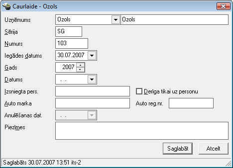
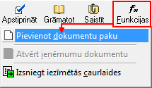
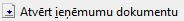

Caurlaižu žurnāls¶
Lai uzskaitītu caurlaižu izlietojumu, Uzņēmuma rīcībā esošo caurlaižu numuri jāpievieno Caurlaižu žurnālā.
Jaunas caurlaides pievienošana datu bāzei¶
Caurlaides pievienošana, izmantojot rīku joslas komandpogu “Pievienot”
un aizpildot caurlaides apraksta ekrāna formu, nodrošina vienas
caurlaides pievienošanu datu bāzē. Atrodoties Caurlaižu žurnālā, rīku
joslā nospiežot komandpogu  , tiks atvērta
caurlaides apraksta ekrāna forma:
, tiks atvērta
caurlaides apraksta ekrāna forma:

Sērija - jānorāda Caurlaides sērijas numurs.
Numurs - jāievada Caurlaides numurs.
Iegādes datums - jānorāda Caurlaides iegādes datums.
Gads - jānorāda gads, kurā Caurlaide ir spēkā.
Datums - Caurlaides izsniegšanas datums.
Izsniegta pers. - persona, kurai šī caurlaide tiek izsniegta.Izvēles rūtiņā “Derīga tikai uz personu”,iespējams atzīmēt pazīmi, ja šī caurlaide ir derīga tikai uz personu.
Auto marka - automašīnas marka, kurai šī caurlaide tiek izsniegta.
Auto reg.nr. - automašīnas valsts reģistrācijas numurs.
Anulēšanas dat. - laukā automātiski tiks iefiksēts caurlaides anulēšanas datums, anulējot Caurlaidi.
Caurlaižu žurnālā pieejamās funkcijas¶
Caurlaižu žurnālā ir izveidotas funkcijas:

Caurlaižu pakas pievienošanas funkcija;
2) Naudas ieņēmumu dokumenta atvēršana, pamatojoties uz kura tiek izsniegta caurlaide;
Izsniegt iezīmētās caurlaides.
1) Pievienot dokumentu paku¶
Uzņēmuma rīcībā esošo caurlaižu numuri jāpievieno Caurlaižu žurnālā. Caurlaižu pakas pievienošanai, nepieciešams izvēlētiesfunkciju , kasnodrošina vairāku caurlaižu vienlaicīgu pievienošanu datu bāzē. Norādot caurlaižu skaitu un Caurlaides sākuma numuru, tiek automātiski uzģenerēts norādītais skaits caurlaižu:
Pēc visu nepieciešamo lauku aizpildīšanasnospiežot pogu
 -dokuments tiks saglabāts un būs pieejams
apskatei/labošanai Caurlaižu žurnālā .
-dokuments tiks saglabāts un būs pieejams
apskatei/labošanai Caurlaižu žurnālā .
Nospiežot pogu  , darbība tiks atcelta un
caurlaides netiks pievienotas datu bāzei.
, darbība tiks atcelta un
caurlaides netiks pievienotas datu bāzei.
2) Atvērt ieņēmumu dokumentu¶
Izvēloties Caurlaižu žurnālāpieejamo funkciju  , iespēja atvērt Ieņēmumu dokumentu - Kases ieņēmumu orderi vai Bankas ieejošais maksājumu , kuram izvēlētā Caurlaide ir piesaistīta:
3) Izsniegt iezīmētās caurlaides¶
Funkcija  , nodoršina iespēju izsniegt
caurlaides, kuras netiek piesaistītas nevienam Kases vai Bankas
ieejošam maksājumam, bet tiek izsniegtas bez maksas:
, nodoršina iespēju izsniegt
caurlaides, kuras netiek piesaistītas nevienam Kases vai Bankas
ieejošam maksājumam, bet tiek izsniegtas bez maksas:
Pievienoto caurlaižu labošana¶
Labojumus saglabātajādokumentā iespējams veikt atverot Caurlaides
aprakstu, kurš pieejams apskatei/labošanai Caurlaižu
žurnālā . Lai labotu pievienoto caurlaidi, Caurlaižu žurnālā
jāizmanto komandpoga  (ALT+A),
unatvērtajāierakstā iespējams veiktnepieciešamos labojumus caurlaides
apraksta ekrāna formā.
(ALT+A),
unatvērtajāierakstā iespējams veiktnepieciešamos labojumus caurlaides
apraksta ekrāna formā.
Pēc labojumu veikšanas, veiktās izmaiņas iespējams
vai  .
.
Pievienoto Caurlaižu piesaiste Kases/Bankas ieņēmumu dokumentam¶
Caurlaižu žurnālā pievienotās Caurlaides iespējams piesaistīt Kases ieņēmumu orderim .
Caurlaižu žurnālā pievienotās Caurlaides iespējams piesaistīt Bankas ieejošajam maksājumam , ja Bankas kopīgajā konfigurācijā ir norādīta pazīme „Atļaut uzskaites dokumentu ievadi bankas ieņēmumos”, tad līdzīgi kā Kases ieņēmumu orderī , ir iespēja norādīt caurlaides, par kurām veikts maksājums.
- scale
100%
- scale
100%
- scale
100%
- scale
100%
- scale
100%
- scale
100%
- scale
100%
- scale
100%
- scale
100%
- scale
100%
- scale
100%
- scale
100%
- scale
100%
- scale
100%